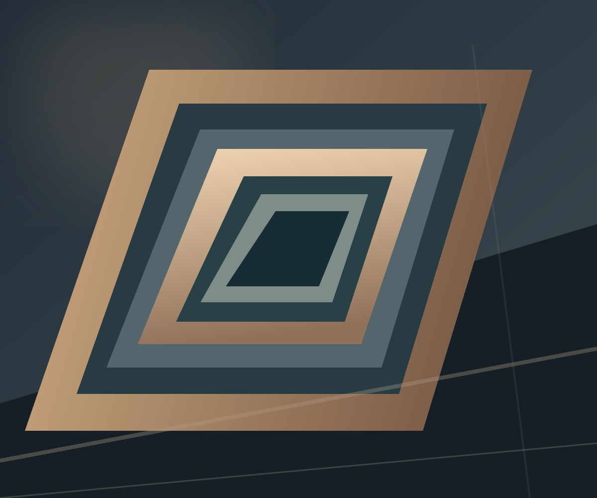

THE MATERIAL LANGUAGE / HTML DOCUMENT
Form becomes an expression.
Segundo documento real. El efecto Split anima los paneles laterales antes de cambiar a la escena final.

Segundo documento real. El efecto Split anima los paneles laterales antes de cambiar a la escena final.
